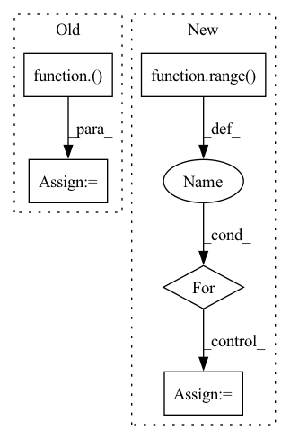

Pattern ID :35790
Before Change
enc_input = keras.layers.Input(shape=(self.lookback, self.ins), name="enc_input1") // Enter time series data
lstm_out1, h0, s0 = self._encoder(enc_input,self.nn_config["enc_config"], lstm2_seq=False, suf="1")
act_out = keras.layers.LeakyReLU()( lstm_out1)
predictions1 = keras.layers.Dense(self.outs)(act_out)
lstm_out2, h1, s1 = self._encoder(enc_input, self.nn_config["enc_config"], lstm2_seq=False, suf="2")
act_out2 = keras.layers.LeakyReLU()(lstm_out2)After Change
enc_input = keras.layers.Input(shape=(self.lookback, self.ins), name="enc_input1") // Enter time series data
inputs = [enc_input]
for out in range( self.outs):
lstm_out1, h0, s0 = self._encoder(enc_input,self.nn_config["enc_config"], lstm2_seq=False, suf=str(out))
act_out = keras.layers.LeakyReLU(name="leaky_relu_"+str(out))(lstm_out1)
predictions.append(keras.layers.Dense(1)(act_out))
inputs = inputs + [s0, h0]
print("predictions: ", predictions)
In pattern: SUPERPATTERN
Frequency: 5
Non-data size: 5
Instances Fragment ID: 101810641
Project Name: atrcheema/dl4seq
Commit Name: 1dab7177e866a52e79f9210f3dc88b012cfba8fd
Time: 2020-08-24
Author: ather_abbas786@yahoo.com
File Name: docs/multi_output.py
M Class Name: MultiSite
N Class Name: MultiSite
M Method Name: build_nn(1)
N Method Name: build_nn(1)
M Parent Class: InputAttentionModel
N Parent Class: InputAttentionModel
M File Name: docs/multi_output.py
N File Name: docs/multi_output.py
M Start Line: 27
M End Line: 41
N Start Line: 28
N End Line: 43
Before Change
zero = shard(jnp.zeros_like(src))
src = 0, (src, zero, src, zero)
if ctx.is_initializing:
src = step(ctx)( src, None)
else:
src = lax.scan(step(ctx), src, None, ctx.dims.sizes.depth, unroll=ctx.model.scan_unroll)
return output_embed(ctx, revnet_out(src[0][1]))
After Change
src = input_embed(ctx, src)
zero = shard(jnp.zeros_like(src))
src = src, zero, src, zero
for _ in range( ctx.dims.sizes.depth):
src = reversible(ctx, momentumnet_main(ctx, spatial_mixing), src)
src = reversible(ctx, momentumnet_side(ctx), src)
src = reversible(ctx, momentumnet_main(ctx, feed_forward), src)
src = reversible(ctx, momentumnet_side(ctx), src) Fragment ID: 101810583
Project Name: homebrewnlp/homebrewnlp-jax
Commit Name: da72f29cee6f596776ec097dc2b9780881938f2a
Time: 2021-09-18
Author: 39779310+ClashLuke@users.noreply.github.com
File Name: src/model.py
M Class Name: AnonimousClass
N Class Name: AnonimousClass
M Method Name: body_ctx(2)
N Method Name: body_ctx(2)
M Parent Class:
N Parent Class:
M File Name: src/model.py
N File Name: src/model.py
M Start Line: 283
M End Line: 290
N Start Line: 254
N End Line: 262
Before Change
w = (leading + norm_w.max(-1))[np.newaxis]
modalities = np.split(signal, signal.shape[-1], -1)
colormaps = [plt.cm.get_cmap(name)( np.linspace(0, 1., int(256 / len(modalities)))) for name in CMAPS][
:len(modalities)]
colors = np.concatenate(colormaps, 0)
mycolormap = mcolors.LinearSegmentedColormap.from_list("mycolormap", colors)After Change
interpolation="bilinear")
// impose modalities on the background in corresponding colormaps
for i in range( n_mod):
y = modalities[i] // modality signals
c = colormaps[i].mean(0) // mean color for the corresponding colormap
ax.plot(t, y.squeeze(-1), linewidth=1.5, c=c)
Fragment ID: 101810621
Project Name: kolaszko/haptic_transformer
Commit Name: b78cf689b18ea6854d17e5ed972b867313e8c086
Time: 2021-12-02
Author: michalbednarek.e@gmail.com
File Name: utils/analysis.py
M Class Name: AnonimousClass
N Class Name: AnonimousClass
M Method Name: impose(3)
N Method Name: impose(2)
M Parent Class:
N Parent Class:
M File Name: utils/analysis.py
N File Name: utils/analysis.py
M Start Line: 28
M End Line: 49
N Start Line: 18
N End Line: 58